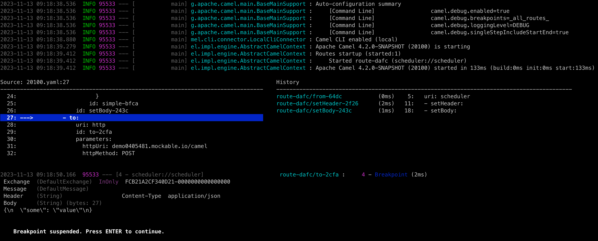

Apache Camel 4.2 (non LTS) has just been released.
This release introduces a set of new features and noticeable improvements that we will cover in this blog post.
Java 21
This is the first release that officially supports running on Java 21.
Camel Core
We continue to fine-tune the new type converter that was introduced on Camel 4.1.0. This version brings a few cleanups to the code, some fixes to the type converter resolution logic, caching improvements and micro optimizations to the type matching algorithm.
This release also comes with a additional changes to cleanup, simplify and organize internal APIs provided by the CamelContext.
The Java DSL now supports String text-blocks when defining Camel URIs, as shown:
from("""debezium-postgres:customerEvents
?databasePassword={{myPassword}}
&databaseDbname=myDB
&databaseHostname=myHost
&pollIntervalMs=2000
&queryFetchSize=100""")
.to("kafka:cheese");
You can now use a bean method call with property placeholders.
For example, a bean can be used to return the name of a topic to use in a Kafka route:
from("kafka:{{bean:myBean.computeTopic}}")
.to("bean:cheese")
In this example Camel will invoke the method computeTopic on the bean with id myBean when the route is created.
Camel Main
You can now configure the following in application.properties:
- Global SSL options using
camel.ssl. - Camel route debugger options using
camel.debug. - Camel Open Telemetry options using
camel.opentelemetry.
DSL
The kebab-case syntax in YAML DSL has been deprecated and Camel will now report a WARN if detected. You should use Camel Case of course ;) For example set-header should be setHeader.
Camel JBang (Camel CLI)
We have continued investing in Camel JBang, and this time we introduce the new DSL debug command, that is a Camel route debugger from the CLI. This makes it very easy and quick to run and debug your Camel routes and better see and understand what happens.

We plan to make a separate blog and video showing the debug command in action.
The Camel JBang now supports Java Agents when exporting to camel-main runtime. This makes it easy for example to include Open Telemetry Java Agent JAR in the export, so you can easily build, package and run with the agent readily available.
We also made Camel JBang work better on Windows. However, we are interested in feedback from Windows users.
The run clipboard.yaml command (run from clipboard) now supports --dev mode for reload on changes (i.e. you can copy to clipboard your updates).
We have also improved support for migrating older Spring XML (classic Spring XML files) or Camel Karaf projects (OSGi blueprint XML files) to Camel 4 with the transform command. A blog post is currently in the writing about this topic. However, this effort, lead us to implement best effort running existing Maven based projects via camel run pom.xml. The need for this is to assist during migrating those older projects, but can be used for other purposes in the future.
Spring and Spring Boot
Upgraded to latest Spring Boot 3.1.5 release.
Added support for Spring beans using @Primary for auto-wiring. This allows Camel to use the primary bean when there are multiple bean instance for the same Java type (such as database connections).
Rest DSL
You can now use wildcards (*) in Rest DSL to handle a wider range of requests from the same API service:
rest("myapi")
.get("user/*")
.to("direct:userStuff")
This will then let Camel service all HTTP GET requests that starts with myapi/user/ such as myapi/user/123, myapi/user/123/account/zip, etc.
Miscellaneous
The camel-azure can now send binary files to Azure Service Bus.
The camel-micrometer can be configured in backwards naming mode (Camel 3.20 or older). This allows to keep using old naming style, that monitoring systems have been pre-configured to use.
The camel-platform-http-vertx now supports streaming big HTTP payloads directly if useStreaming=true has been set.
The camel-dynamic-router component has been refactored to use Camel’s MulticastProcessor as its engine instead of custom processor.
The camel-kafka consumer will now fail on startup if you have an invalid broker port number, that previously would make Kafka attempt endless reconnection.
The camel-http component now supports OAuth 2.0 client authentication.
New Components
camel-azure-schema-registry- Azure Schema Registry Component for utilities to deal with authentication.camel-smb- Receive files from SMB (Server Message Block) shares.
Upgrading
Make sure to read the upgrade guide if you are upgrading from a previous Camel version.
Release Notes
You can find more information about this release in the list of JIRA tickets resolved in the release:
Roadmap
The following 4.3 release is planned to support Spring Boot 3.2.
This release is likely to be the next LTS release in January 2024. But we may release it as a non-LTS release in December and then let Camel 4.4 be the LTS release for January 2024.